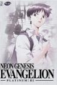

Neon Genesis Evangelion
List contains: 26 items, 0.4 hours.
Seasons: 1 |
Seasons: 1 |

Both of You, Dance Like You Want to Win! (1995) Airs on 1995-11-29
S1 - E9 of Neon Genesis Evangelion
S1 - E9 of Neon Genesis Evangelion
She said, 'Don't make others suffer for your personal hatred.' (1995) Airs on 1995-12-20
S1 - E12 of Neon Genesis Evangelion
S1 - E12 of Neon Genesis Evangelion
Those Women Longed for the Touch of Others' Lips, and Thus Invited Their Kisses. (1996) Airs on 1996-01-10
S1 - E15 of Neon Genesis Evangelion
S1 - E15 of Neon Genesis Evangelion
He Was Aware that He Was Still a Child. (1996) Airs on 1996-02-21
S1 - E21 of Neon Genesis Evangelion
S1 - E21 of Neon Genesis Evangelion
The Beginning and the End, or 'Knockin' on Heaven's Door' (1996) Airs on 1996-03-13
S1 - E24 of Neon Genesis Evangelion
S1 - E24 of Neon Genesis Evangelion